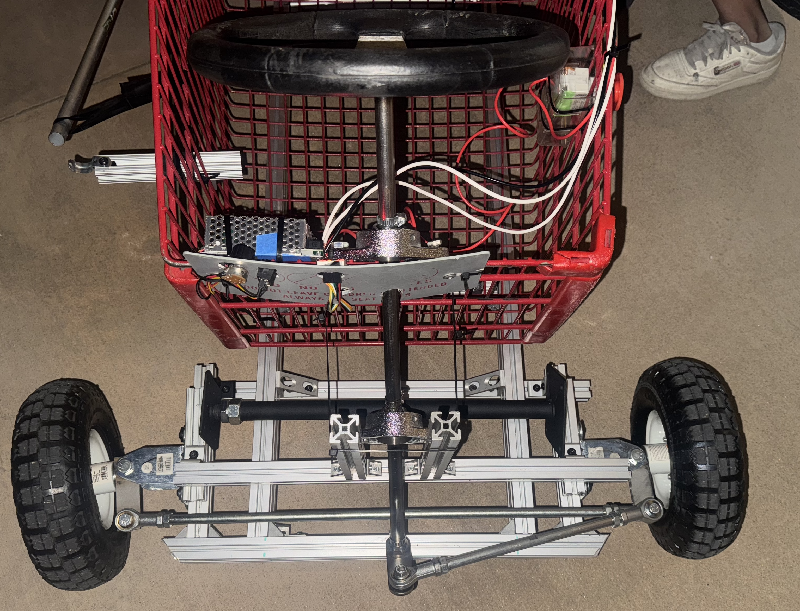
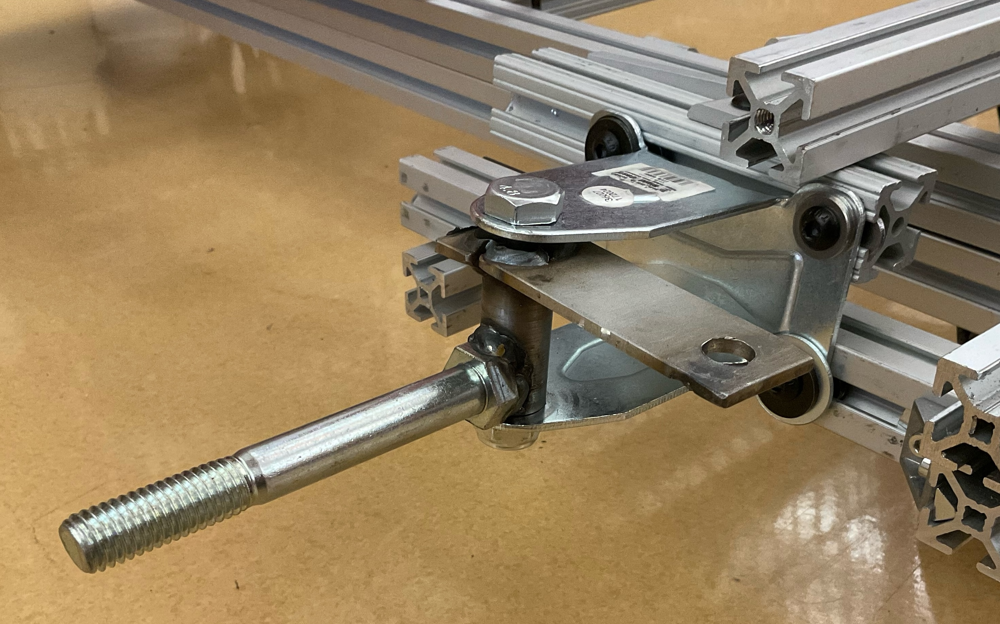
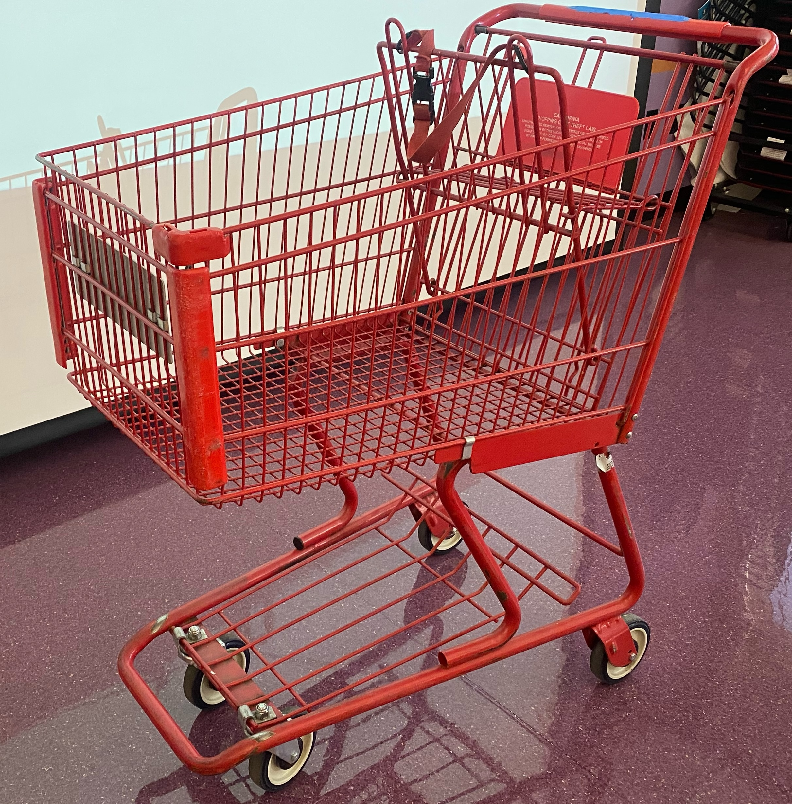
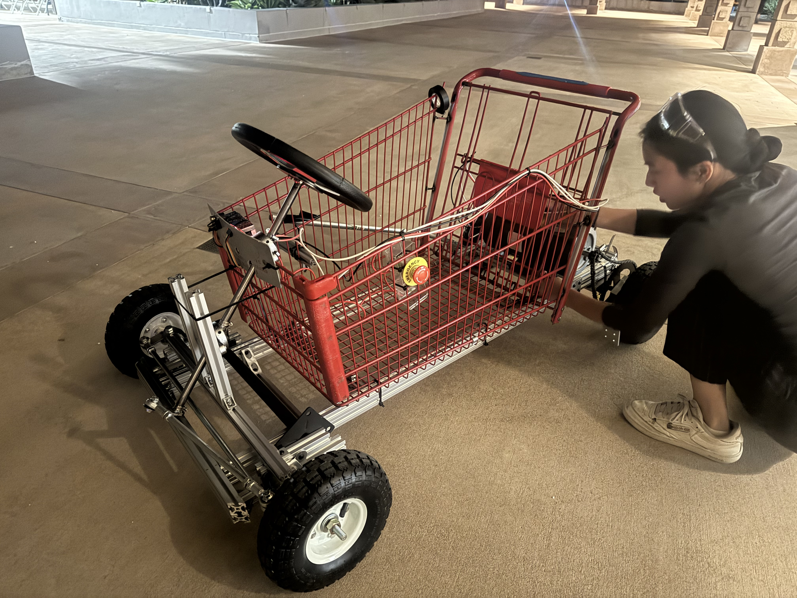
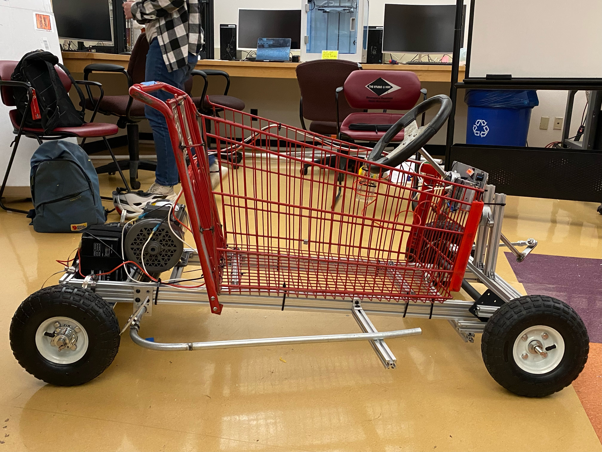
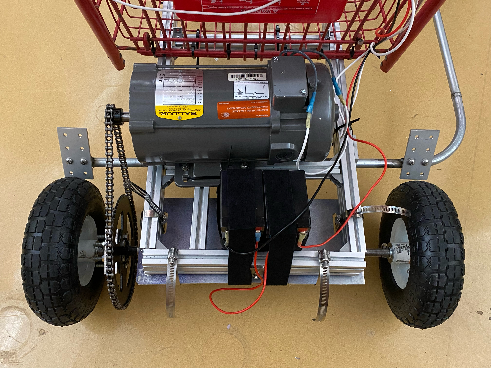
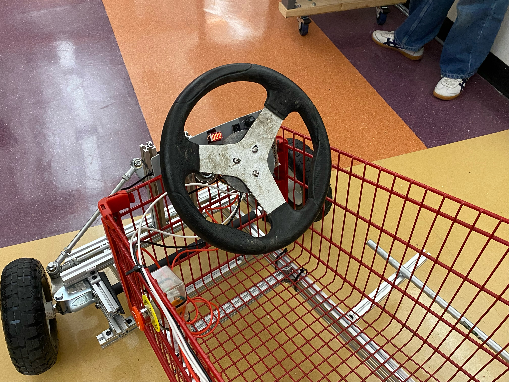

Design Features of Main Subsystems
Steerage Subsystem
The go-kart will be steered by the front wheels, using a Single Wheel Drive go-kart design. The user will rotate the steering wheel, which in turn will rotate the steering column welded to a lower bracket to make a Pitman arm. The Pitman arm is a shaft that translates rotary or angular movement into linear movement and is used in our steering subsystems to pivot the wheels. The steering column lower bracket is then connected to tie rods and connected to the wheel spindles. The wheels will be on a spindle on the front axle and controlled by the tie rods controlled by the Pitman arm. When designing this steering subsystem, we have to ensure that wheels will remain parallel, be wary of binding, and add stops to prevent involuntary motions.

We opted for this design due to cost, feasibility, and common practice. To minimize the cost, the team designed around the tie rods and steering wheel lent to us by MACH, machined shaft sleeves to use available, free bearings, and machined the spindles and stearing arm. The spindle bracket and kingpin bolt is from a wheel castor, and used to hold the spindle. The spindle itself if machined from 1018 Carbon steel [hammer head stock] and welded to a bolt to hold the wheel and a steel plate to connect to the tie rods. We also machined sleeves to adapt the bolt to the wheel hole and sleeved to make the 0.63” diameter steering coloums to fit in the 0.75” diameter bearings.

The steering system involved multiple design decisions and iterations. For started, we wanted to ensure that we would not damage parts lent to us – meaning that we could not weld to the steering wheel, or cut the length of the pitman arms. This motivated frame and pitman arm design. We also decided to use two bearings to constrain the movement of the steering arm. Furthermore, human tests motivated the length of the pitman arm – originally, the arm was too long, and the steering wheel interfered with the space for the user. Finally, from preliminary testing, we noticed that slight imperfections in steering set up could lead to tilt within the wheels. To counteract this, the team employed a jack post between the wheels.
Frame Subsystem
The frame is built using a shopping cart and 80/20. The legs of the shopping cart was removed with an angle grinder, allowing the cart to be closer to the ground. This was desired as a lower center of mass improves stability (less chance of tipping over), handling, and safety. The back of the shopping cart was extended to improve user comfort. The shopping cart provided us a base to design the rest of the system around. The grid cart made it easy to attatch wiring, the 80/20, and steering bearing. Moreover, the cage around the user adds a level of safety.
One quantitative decision made was the material choice and frame dimensions in order to meet the specifications of safely moving a 200 pound user, meaning that the frame had to support the static and dynamic load from the user’s weight. An 80-20 frame was readily available to prototype with, and following yield and deflection analysis, we decided to move forward with 80-20 for the final build given that we expect to be two orders of magnitude away from yielding the 80-20.

Originally, we had debated welding a steel frame for the go kart as this is what we had seen for most online DIY go kart builds. However, we opted to use an 80/20 base under the shopping cart due to its availability and modularity. An online blog showed the feasibility, and encouraged us to move foward with the analysis and design. Moreover, the team was able to acquire 80-20 from a scrapped clinic prototype. The modularity and availablity was helpful in the prototyping stage, allowing each subteam to easily visualize changes. Moreover, the modularity and fastening ability helped connect all subsystems together. We used two layers of 80/20 in the frame for added strength. The 80/20 frame was connected to the shopping cart with industrial stength zipties.

Braking Subsystem
The braking system will involve a lever that will apply a normal force on the back wheel of the goKart when pulled down. The braking line will be applied to both of the wheels. To create this the team welded three steel pipes together to cover the width of the of the frame and reach all the way to the front of the cart. Then two aluminum “brake pads” were welded on to steel pipe and aligned with the two back wheels. Once the lever is raised by the rider the brake pads then come in contact with the wheels and stop the rotation of the wheels. On top of a physical break there are two other ways to stop the kart. One is with the red E-STOP that when pushed will automatically cut power to the power. The other is with the potentiometer which when put at its lowest value will also slow down the kart.

Motor Subsystem
For the motor system, we will have a single motor driving both of the back wheels. It will use gears to transmit power and sit in the back of our GoKart. In order to obtain enough torque to move the entire vehicle and user at a speed of 5mph, a gear ratio of 6.5 was used, where the driving sprocket has 10 teeth and the sprocket driving the back axle has 65 teeth. A 35 chain was used to connect the two sprockets, and kept at a pretension. The back axle consisted of a 5/8 inch shaft that connected the 26 tooth sprocket, two block bearings mounted to an aluminum plate, and the two back wheels. The aluminum plate’s purpose is to mount the back axle system to the frame of the vehicle and also house the batteries. Keyhole slots and hose clamps were then used to fixture the sprockets and wheels in place so that they would rotate relative to the shaft.
One quantitative decision made was the number of teeth per sprocket used in the motor subsystem in order to meet the specifications of moving a 200 pound user up to 5mph. After our analysis, a 6.5 gear ratio was intentionally achieved in order to meet these requirements.

PWM Control
To give the user more control of the motor, the team used a Pulse-Width Modulation (PWM) Contoller. This controller uses a potentiometer to inform the duty cycle, reads the duty cycle in a form of a percentage on a seven-segment display, and includes a switch to turn on the motor, run the motor in reverse, and turn off the motor. PWM speed control works by driving the motor with a series of fast on and off pulses with variable duty cycle. The duty cycle informs the fraction of time the motor is on versus off, therby controlling the speed the motor with rotate.
The team opted for this design as it would require minimal electrical work to integrate with our system, allowing us to focus on the mechanical design of our system. Originally, we had thought to use a potentiometer as part of a voltage divider circuit between the battery and motor. However the large voltage would require a physically large (and expensive) potentiometer and the large current needs of the motor could not be met with a voltage divider. Thus, we switched to a more common solution for motor speed control – a PWM controller. The specific Contoller choosen is compatible with DC voltages between 10 to 55V and a maximum current of 60A. As we use 24V and have a current below the maximum, this controller is applicable for our design.
We are ultimately happy with the PWM control as it allows the user to control the speed and allows for the motor to run in reverse by inverting the voltage, which was one of our stretch goals. To ensure the safety of our design, we also integrated an E-STOP in our design that would cut the power to the motor when pressed. This E-STOP was wired in series between the battery and PWM Controller.
